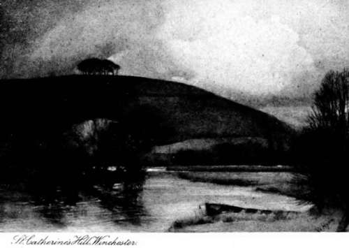
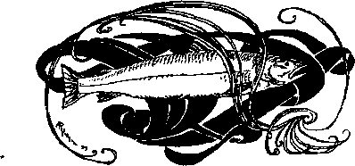
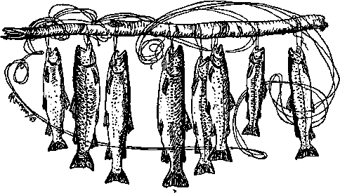

Winchester. Part 3
Description
This section is from the book "Fly Fishing", by Sir Edward Grey. Also available from Amazon: Fly Fishing.
Winchester. Part 3
To enable our school fishing at Winchester to be understood, it is necessary to give some account of hours, for the management of time was most important. As a rule school arrangements did not set us free till twelve o'clock, and my object of course was to be by the water and fishing as soon as possible afterwards. My house—fortunate in all other respects—was unfortunate in being the farthest but one from the river. To have gone there and back after school was over would have been to lose at least ten minutes. This clearly could not be endured; nor must more precious time be lost in putting together a rod. It was necessary to make arrangements by which one could rush from school at twelve o'clock without a moment's delay, with a rod and tackle ready for immediate use, and with things of some kind on one's feet and legs, which, even when the water was "out," would with ordinary care keep a dry inside in the water meadows. Wet feet may be wholesome enough under proper conditions, but even at the age of fourteen it is not good to eat dinner and spend several sedentary hours in wet boots and socks on every afternoon. By various expedients, all these difficulties were satisfactorily overcome, and if nothing untoward happened "up to books" to delay one, and if "dons" were punctual in getting work over, it was possible by running to begin fishing at about five minutes past twelve. Here let me explain how fortunate this was for us,—and by "us" is meant those few of us who cared for fishing, the rest being unconscious of the special good fortune of having this hour from twelve to one o'clock free. It is, on the whole, the most likely hour in which to find trout rising. In cold weather it is often too early; in warm weather it is sometimes too late, but in the best of the fly fishing season, and indeed in any month of the season, on water where there is no May-fly, it is often the best hour of the rise in the day — using the word " day" as distinct from " evening." If I were forced to choose one hour, and only one, in which to fish daily throughout the season, it would be this hour from twelve to one o'clock. Soon after one o'clock we had to leave the water to go up to house for dinner. It was a compulsory meal for which one might be rather—but not very—late without notice being taken, and the adjustment of this point in one's mind, when fish were rising, was a very distressing business. There are ways my feet have often trod, but in which I have seldom gone at a walking pace; they are those which are the shortest from different parts of the river to the house in which I once was, and many many times have I sped along them, sometimes full of the joy of success, sometimes in exasperation and despair, but nearly always rather late, a rod at full length trembling and shaking in the air as I ran. The best method of making a good use of this hour on " Old Barge" was to choose quickly an unoccupied place where fish were rising, and to stick to it.
There would, as a rule, be no success at first, and the trout would go on feeding, apparently with a fixed determination to pay no attention to an artificial fly, but every now and then one of them after much casting would lose his head or make a mistake and be hooked. To land one fish not below the limit of size was satisfactory ; a brace was a real success. The result of the best hour which I ever had was two brace and a half, but that was very exceptional. It happened at the end of May, on a day when the water was made rough by a strong wind up stream, and when there was a great rise of full-sized duns, which the trout were taking greedily. On whole school days it was impossible to get a full hour's fishing in the afternoon, and though there was more time on half-holidays, it was very seldom that there was a rise at that time. In the same meadow as this part of " Old Barge," there was another stream, known to the outside world as the mill pond. It was a very dull bit of water with hardly any current, and though it held larger trout than the main river, they did not rise till comparatively late in the season, and then generally in the evening only. These trout were in their habits altogether different from those in " Old Barge." It once happened to me to have a great triumph and land one of them, which weighed three pounds and a quarter. This fish took a grey quill gnat at about five o'clock one afternoon, but as a rule, all we could do on the mill pond was to see occasionally the first signs of the beginning of the evening rise. In summer we could fish early in the evening, but we had to be indoors punctually at eight o'clock, and this was just too soon in June and July to let us have much chance, either in " Old Barge" or the mill pond, though we saw other and freer anglers coming to the water as we left it. There was more discipline to be learnt in this way than in any other at school. To have a passion for fishing, to spend an hour by the river evening after evening watching intently for a rising trout, and invariably to tear oneself away just as the rise began was a curious experience. There were other parts of the Itchen, where we used to fish—on " New Barge" along the old towing path, and from one side under the old elm trees at St. Cross, but these places were farther away, and we generally went there on free afternoons, and then only when, after finding no trout rising in " Old Barge," we roamed about in the vain hope that they might be rising somewhere else.
These Winchester trout taught us the necessity of using fine gut and small flies, and of floating the fly accurately over a rising fish; but they did more than that, they taught us to expect success only as the result of patience and hard work. This was a valuable lesson, which made the fishing in other waters seem easy by comparison. A day on private water, where a feeding trout might reasonably be expected to rise to the first accurate cast was a glorious delight; something to be thought about for days beforehand and remembered long afterwards. In fly fishing, except on very rare days, or on waters which are really over-stocked and little fished, hard work is needed to make a good basket; and to have been used to work hard and to expect little is the best of training. The record of trout above the limit of size (three-quarters of a pound) caught by me on the water described at Winchester, was in 1877 one trout, in 1878 thirteen trout, in 1879 thirty-two trout, in 1880 seventy-six trout, figures which show how severe the training was at first, and how my dry fly education progressed under it.
It would not be suitable for me to attempt to tell here the full tale of my gratitude to Winchester, for to do this would lead me into many reminiscences which have nothing to do with angling. It will be enough to say that the memory of those days is altogether happy, and that the Itchen and its trout played a part in the happiness of them.

Continue to: